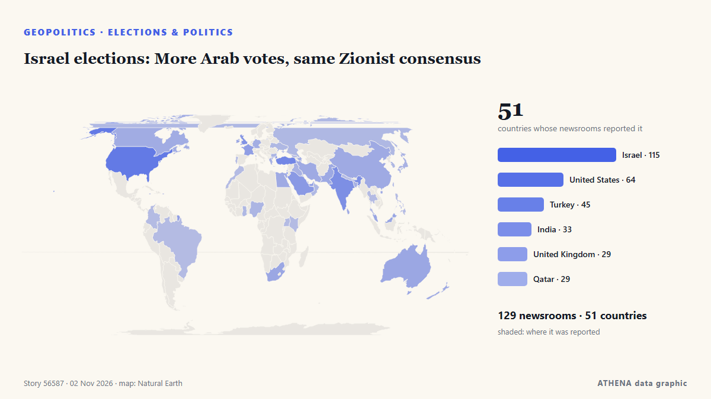

ATHENA Glaux Intelligences — Παγκόσμια ειδησεογραφική ανάλυση — κάθε αριθμός εξηγημένος
Οι ειδήσεις του κόσμου, διασταυρωμένες ανάμεσα σε χώρες
Το ATHENA Glaux παρακολουθεί εκατοντάδες ειδησεογραφικά μέσα σε όλο τον κόσμο και ομαδοποιεί τις αναφορές τους σε γεγονότα. Για κάθε γεγονός βλέπετε πόσα μέσα σε πόσες χώρες το ανέφεραν, ποιος ήταν πρώτος και έναν βαθμό κινδύνου με τους λόγους του — με ενημέρωση κάθε 15 λεπτά, σε επτά γλώσσες.
Ζωντανά από τις ειδήσειςIsrael elections: More Arab votes, same Zionist consensus130 μέσα · 51 χώρες · Κίνδυνος 4.9 · Πηγές: Responsible Statecraft, Central Banking

ΓεωπολιτικήIsrael elections: More Arab votes, same Zionist consensus
Israelis head to the polls on October 27 in a vote that will cast Prime Minister Benjamin Netanyahu and his right-wing and religious allies against a motley crew of opposition parties. από Responsible Statecraft
Οι τίτλοι των ειδήσεων παρουσιάζονται στα αγγλικά, όπως δημοσιεύτηκαν.
26 Dead, 27 Missing as Russia Strikes Aid Site in Komyshuvakha, Zaporizhzhia Region
A school in Komyshuvakha, Zaporizhzhia region, used for weekly humanitarian aid distribution and its shelter were struck with at least nine Russian guided aerial bombs (KABs) on Monday, Nov. από Kyiv Post
US delivery of 500 Patriot missiles to Ukraine will span 3 years starting in 2030
NATO Supreme Allied Commander Europe General Alexus Grynkewich said the United States continues to supply Ukraine with Patriot interceptor missiles, as well as weapons packages paid for by European… από Ukrinform (English)

Η σημερινή εικόνα
| 23:00 | 295 |
|---|---|
| 00:00 | 243 |
| 01:00 | 235 |
| 02:00 | 374 |
| 03:00 | 344 |
| 04:00 | 449 |
| 05:00 | 501 |
| 06:00 | 1011 |
| 07:00 | 1891 |
| 08:00 | 1068 |
| 09:00 | 875 |
| 10:00 | 900 |
| 11:00 | 788 |
| 12:00 | 789 |
| 13:00 | 919 |
| 14:00 | 882 |
| 15:00 | 732 |
| 16:00 | 1014 |
| 17:00 | 631 |
| 18:00 | 649 |
| 19:00 | 560 |
| 20:00 | 387 |
| 21:00 | 413 |
| 22:00 | 453 |
Κίνδυνος των σημερινών γεγονότων
Netanyahu Pressing Trump To Attack Iran After Midterms: Report
Democratic doctors aim to convert the backlash against the Trump administration’s health policies into midterm votes. από Al Jazeera English
The top 10 things to watch for in the US midterm elections
Analysis - There's more than one election this week. από RNZ National
Oleshky ceasefire expires, Ukraine evacuates civilians from parts of Kherson region
Nov 1 - Ukraine's military said it evacuated 167 people from threatened areas of southern Kherson region on Sunday as a temporary local ceasefire expired — two days after buses carried residents out… από The Straits Times
Με την ευρύτερη κάλυψη
Αναδυόμενα σήματα
- Απότομη αύξηση · Ενεργό τώραPalm Beach County
- Απότομη αύξηση · Ενεργό τώραCyclone Murasu
- Απότομη αύξηση · Ενεργό τώραBTC
- Απότομη αύξηση · Ενεργό τώραADIPEC
- Απότομη αύξηση · Ενεργό τώραRepublican Mike Rogers
Επίσημες προειδοποιήσεις
- Red notification for tropical cyclone FOUR-26. Population affected by Category 1 (120 km/h) wind speeds or higher is 1.156 million .Red · GDACS ·
- M 6.0 - 165 km NW of Port-Olry, VanuatuM6.0 · USGS ·
- M 6.2 - 43 km ESE of Port-Olry, VanuatuM6.2 · USGS ·
- M 6.0 - 214 km NW of Port-Olry, VanuatuM6.0 · USGS ·
Το ATHENA στο Telegram
Μπείτε δωρεάν στην ομάδα ATHENA Glaux και λάβετε τις ειδήσεις τη στιγμή που δημοσιεύονται εδώ:
- έκτακτα γεγονότα με κίνδυνο 6 ή περισσότερο
- ωριαία σύνοψη των κορυφαίων γεγονότων
- ενημερώσεις των παρακολουθήσεων κινδύνου (Ορμούζ, Ερυθρά Θάλασσα, Ταϊβάν, κυρώσεις κ.ά.)
- την ημερήσια ενημέρωση κάθε πρωί στις 10:00 (ώρα Ελλάδας)
- εβδομαδιαία προοπτική
- επίσημες προειδοποιήσεις, αναδυόμενα σήματα και κινδύνους σε άνοδο
Πατήστε το κουμπί, ανοίγει το Telegram, πατήστε «Join». Οι αναρτήσεις είναι στα αγγλικά· μπορείτε να τη σιγάσετε ή να αποχωρήσετε όποτε θέλετε. Δεν έχετε Telegram; Είναι δωρεάν στο telegram.org.
Παρακολούθηση κινδύνων
Περισσότερα ›Παγκόσμιοι κίνδυνοι — εβδομάδα 45, 2026 (2–8 Νοε) ›
Γεωπολιτική, Πολιτική & Ασφάλεια
Περισσότερα ›Trump makes final US midterm pitch at troubled Reflecting Pool
His speech will contrast the Republicans' efforts making the US 'safer and wealthier' with the Democrats’ 'radical, America Last agenda'. από The Straits Times
- Πόλεμοι & συγκρούσεις
Russian bomb attacks on aid centre and shelter kill 26, Ukrainian officials say
- Διπλωματία & σύνοδοι
Russia arrests minor after US Embassy warns of ‘credible threat of a mass casualty event’ in Moscow
- Διπλωματία & σύνοδοι
UN peacekeeping mission in Western Sahara ends after 35 years
- Εκλογές & πολιτική
UK PM Burnham says he is ‘open’ to formal apology for slavery, but rules out reparations
Οικονομία, Χρηματοοικονομικά & Αγορές
Περισσότερα ›Owner of Serbia's Delicenced ALTA Banka Gets Arrested
The Executive Board of the National Bank of Serbia has officially revoked the operating licence of Alta Banka a.d. από N1 Serbia (English)
- Προβλέψεις & κίνδυνος ύφεσης
Danny Russell picks the horses to tip at this year's Melbourne Cup
- Χρέος & προϋπολογισμοί
PM’s Commonwealth ‘debt reset’ plan after opening door to slavery apology
- Απασχόληση & μισθοί
Wage protests disrupt 529 Bangladesh garment factories as government forms pay board
- Μετοχές, ομόλογα & αγορές
Anthropic Reports $17 Billion Quarterly Revenue Ahead of IPO
Εμπόριο, Βιομηχανία & Υποδομές
Περισσότερα ›US to drop South Africa, Rwanda from AGOA duty-free trade initiative
Trade Industry and Competition Minister Parks Tau says South Africa is prepared for any outcome. από SABC News
- Εμπόριο & εμπορικές συμφωνίες
Underground areas of Hagia Sophia to open, revealing new sections
- Ναυτιλία & λιμάνια
11 tankers caught fire in Hormuz in 9 days: IRGC Navy
- Γεωργία & επισιτιστική ασφάλεια
Five arrested after South African farmer shot and tortured
- Ναυτιλία & λιμάνια
Iran offers to reopen Hormuz within 48 hours
Ενέργεια, Πόροι & Περιβάλλον
Περισσότερα ›(Yonhap Interview) S. Korea prepares launch of new SMR review system this month: nuclear watchdog chief
SEOUL, Nov. 3 (Yonhap) -- Small modular reactors (SMRs) have emerged as an impor... από Yonhap (English)
- Πετρέλαιο & φυσικό αέριο
Oil prices pull back sharply on signs of US-Iran diplomacy to end war
- Ακραία καιρικά & φυσικές καταστροφές
Flash Flooding Triggers Evacuations in Southwest and Dire Warning for Colorado Spa Town
- Πετρέλαιο & φυσικό αέριο
HUR Confirms Russian Su-57 Explosion at Akhtubinsk Airfield
- Ακραία καιρικά & φυσικές καταστροφές
Cyclone Murasu: Red alert in two Telangana districts, orange in three more on November 3
Τεχνολογία, ΤΝ & Κυβερνοασφάλεια
Περισσότερα ›Ukrainian air raid alert app sends false warnings after being hacked
The app has sent Ukrainians false warnings that some areas of the country face nuclear and chemical threats. από ABC News Australia
Επιχειρήσεις, Εταιρείες & Επενδύσεις
Περισσότερα ›Apple's new CEO Ternus to face first earnings test as memory costs surge
JOHN TERNUS will host his first earnings call as Apple’s CEO on Monday, with investors looking to the… από BusinessWorld
- Εταιρική στρατηγική
Apple FYQ4 Revenue Tops Forecasts On iPhone Sales As New CEO John Ternus Steps Up
- Εταιρική στρατηγική
Google disrupts million-device XCPE Android malware botnet, bans TV box maker
- Συγχωνεύσεις & εξαγορές
TotalEnergies to Take Operatorship of Two Major Gas Fields off Malaysia
- Συγχωνεύσεις & εξαγορές
Day After Opposition Protest, Talk Of NCP Merger At Amit Shah Meeting: Sources
Υγεία, Επιστήμη & Έρευνα
Περισσότερα ›Molecular traces from 'blood cells' found in 115-million-year-old dinosaur bones
The surprise discovery of an iron-carrying molecule preserved in the bones of a Brazilian dinosaur adds to research about soft tissues found in fossils that are millions of years old. από ABC News Australia
- Επιδημίες & δημόσια υγεία
Washington state resident dies from bird flu following exposure to infected cattle
- Φάρμακα & βιοτεχνολογία
US approves cheap version of HIV prevention shot
- Συστήματα υγείας
NFL-Lions report positive progress for linebacker Campbell after injury
- Επιστημονικές ανακαλύψεις
Birdsong shares surprising similarities with human speech, music
Κοινωνία, Δίκαιο & Δημόσια Πολιτική
Περισσότερα ›4 Americans and 1 Canadian among the 69 dead in Spain’s train collision
Four Americans and one Canadian were among the 69 people killed in last week's high-speed train collision in Spain, authorities said. από The Canadian Press (via CityNews)
- Διαμαρτυρίες & κοινή γνώμη
France launches 'attempted murder' probe after petrol bomb attacks on security forces
- Δυστυχήματα & έκτακτες ανάγκες
20-year-old woman was part of team piloting plane that slammed into Florida street killing 9
- Δικαιοσύνη
Lindsay Clancy’s lawyers urge Massachusetts judge to dismiss murder case
- Καταναλωτές & κοινωνία
Martha Stewart says she ‘really screwed up’ with homeless Halloween costume
Αθλητισμός
Περισσότερα ›FIFA to grant access to documents from scrapped World Cup sell-off plan
Football's world governing body invited council members to review the defunct Fifa Forward Enterprise proposal under specific conditions at its Zurich headquarters. από Free Malaysia Today
- Ποδόσφαιρο
Harry Kane misses penalty in first match since Ballon d'Or triumph
- Formula 1 & μηχανοκίνητα
Russell ‘distraught’ as Antonelli seals title; Mercedes fined for media no-show
- Ολυμπιακά & άλλα σπορ
Senegal prepares to open 2026 Youth Olympic Games in Dakar
- Ολυμπιακά & άλλα σπορ
Gabby Williams leads Valkyries to WNBA championship in second season, beating Dream 68-63 in Game 7
Πολιτισμός, Πρόσωπα & Τρόπος ζωής
Περισσότερα ›James Bond actor Ben Whishaw says franchise ‘needs to be reinvented’
The 46-year-old has starred in three James Bond films alongside Daniel Craig as the character of Q. από Evening Standard (London)
- Τέχνες, βιβλία & κληρονομιά
Keira Knightley says Black Doves fight sequences are the ‘joy of the series’
- Τέχνες, βιβλία & κληρονομιά
Christie’s debut Abu Dhabi sale totals $8.94 million, setting nine auction records
- Κινηματογράφος & τηλεόραση
King chats with Sir Idris Elba during unexpected meeting in Antigua
- Απώλειες
Techno Pioneer Juan Atkins Dead At 64